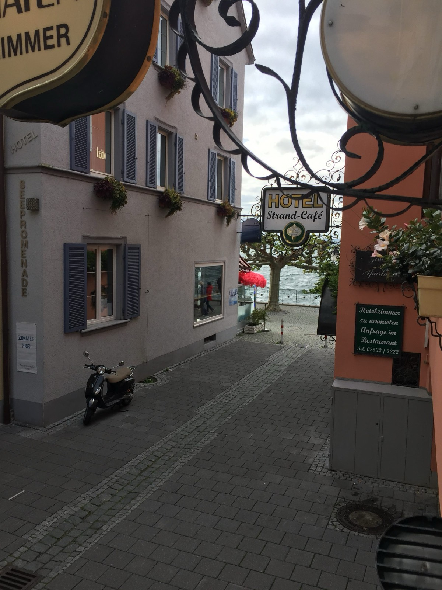

Direkt im Haus
Die Hafenschänke
Seit 1956 in Familientradition — heute von Sarah Lehmann in der vierten Generation geführt.
Direkt im Haus
Seit 1956 in Familientradition — heute von Sarah Lehmann in der vierten Generation geführt.
Geschichte
"Er liebte den Seewein — und wollte ein gutes Viertele anbieten."
Georg Dreher — Küfermeister, Seewein-Liebhaber und Urgroßvater der heutigen Besitzerin — legte 1956 den Grundstein für die Hafenschänke.
Im Erdgeschoss seines 1780 erbauten Elternhauses richtete er eine schlichte „Stehweinstube" ein. Die Idee war einfach: guten Wein vom See anbieten und selbst genießen. Was als persönliches Projekt begann, wurde zur Seele des Hauses.
Von 1994 bis 2022 führten Doris Lehmann und Olaf Jakopic die Hafenschänke im Rahmen des Restaurant-Gästehauses Am Hafen. Das Erdgeschoss des Fachwerkhauses entwickelte sich zum Treffpunkt für Gäste und Einheimische gleichermaßen.
Seit 2023 liegt die Hafenschänke in den Händen von Sarah Lehmann — Enkelin von Doris Lehmann und damit vierte Generation im Haus. Sie hat den Betrieb neu interpretiert: regionale Getränke aus der Bodenseeregion und handgemischte Cocktails in einem Raum, der seine Geschichte lebt.
Impressionen





Heute
Sarah Lehmann hat die Hafenschänke neu interpretiert — treu dem Geist des Ortes, aber mit einem frischen Blick auf die Bodenseeregion.
Das Angebot konzentriert sich auf regionale Produkte: Weine vom Bodensee, lokale Brauereien und handgemischte Cocktails mit saisonalen Zutaten. Der Raum mit seinen alten Holzbalken und dem Charme von mehr als 250 Jahren ist dabei die beste Kulisse.
Die Hafenschänke ist ein Ort für ein Abendgetränk nach einem langen Tag am See — oder für einen Absacker mit netten Menschen, die man gerade erst kennengelernt hat.